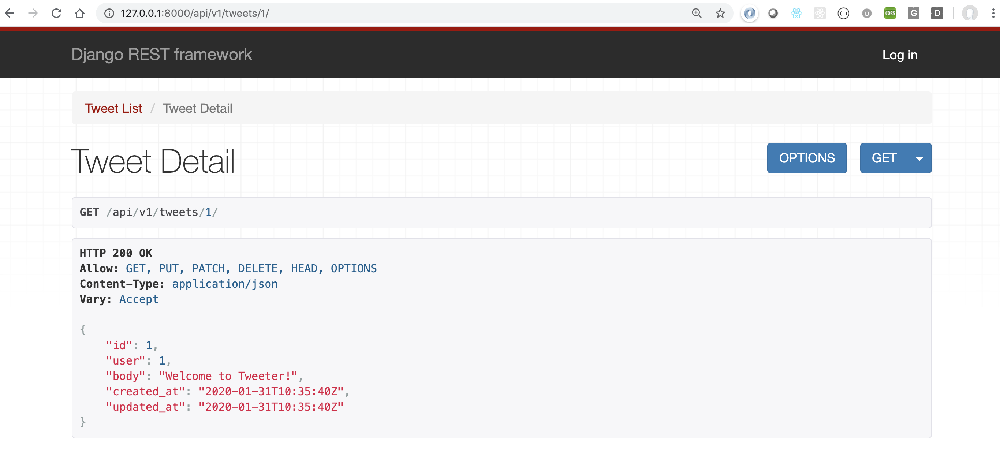

Django Rest Framework: API Permissions
Note: This post is an extract from a demo project to build a simplistic Twitter app with API support.
At the moment, any anonymous, non-authorized user can access our API endpoints. Although we might not mind anonymous viewing, anyone can create, edit, update, or delete a tweet.
As an example, the tweet detail page http://localhost:8000/api/v1/tweets/1/ displays the tweet information, which is fine, except any random user, anonymous or otherwise, can update or delete an existing tweet. This is not secure!
Project-Level Permissions
If you are thinking “I bet DRF has a setting handling permissions”, you are absolutely correct. Django REST Framework (DRF) comes with the ability to set a project-level permission policy. If needed, we can loosen the permissions at the view-level for certain situations.
Fortunately Django REST Framework ships with a number of built-in project-level permissions settings we can use, including:
- AllowAny: any user, including anonymous users, have full access
- IsAuthenticated: only registered & authenticated users have access
- IsAdminUser: only admins users have access
- IsAuthenticatedOrReadOnly: anyone can view, but only authenticated users have write, edit, & delete privileges
To use the project-level permission settings, update the REST_FRAMEWORK section of the tweeter_app/settings.py file.
# settings.py
...
REST_FRAMEWORK = {
'DEFAULT_PERMISSION_CLASSES': [
'rest_framework.permissions.IsAuthenticatedOrReadOnly', # new
]
}
...
Now if you view the first tweet, the user’s options are based on their authentication status.

Custom Permissions
If needed, we can create custom permission classes to tighten or loosen the project-level permission settings. For the tweets API, let’s create a custom permission that will only allow the user that created a tweet to modify or delete the tweet.
We do this by creating a api/permissions.py file and adding the content below. From the BasePermission class, we are overwriting the has_object_permission function. Our updated function will return True if the request is ‘safe’ and does not attempt to create or delete the tweet, such as a GET request, or if the request is comes from the user that created the tweet.
# api/permissions.py
from rest_framework import permissions
class IsTweetAuthorOrReadOnly(permissions.BasePermission):
def has_object_permission(self, request, view, obj):
# SAFE_METHODS are: GET, OPTIONS, HEAD
if request.method in permissions.SAFE_METHODS:
return True
# Otherwise, only the tweet author can change a tweet
return obj.user == request.user
Next Up
Good job! Next we will create the ability for our API users to authenticate via tokens.